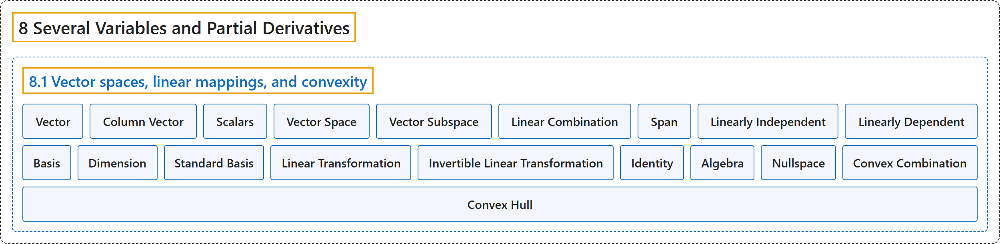

8.1 Vector spaces, linear mappings, and convexity
Classification

Glossary
| Term | Definition | 中文翻译 | Source |
|---|---|---|---|
| 8.1 Vector spaces, linear mappings, and convexity 向量空间、线性映射与凸性 |
(No definition) | （无定义） | Lebl, 2026, section 8.1 |
| Vector 向量 |
"That is, \(v \in \mathbb{R}^n\) is a vector, which means \(v = (v_1,v_2,\ldots,v_n)\) is an \(n\)-tuple of real numbers." | 也就是说，\(v \in \mathbb{R}^n\) 是一个向量，即 \(v = (v_1,v_2,\ldots,v_n)\) 是由实数构成的 \(n\) 元组。 | Lebl, 2026, section 8.1 |
| Column Vector 列向量 |
"At times, it is useful to write and treat vectors as column vectors, that is, \(n\)-by-\(1\) matrices." | 有时把向量写成并当作列向量来处理很有用，即 \(n \times 1\) 矩阵。 | Lebl, 2026, section 8.1 |
| Scalars 标量 |
"We call real numbers scalars to distinguish them from vectors." | 我们把实数称为标量，以区别于向量。 | Lebl, 2026, section 8.1 |
| Vector Space 向量空间 |
"Let \(X\) be a set together with the operations of addition, \(+ \colon X \times X \to X\), and multiplication, \(\cdot \colon \mathbb{R} \times X \to X\), (we usually write \(ax\) instead of \(a \cdot x\)). The set \(X\) is called a vector space (or a real vector space) if the following conditions are satisfied: (Addition is associative) (Addition is commutative) (Additive identity) (Additive inverse) (Distributive law) (Distributive law) (Multiplication is associative) (Multiplicative identity)" | 设集合 \(X\) 带有加法运算 \(+ \colon X \times X \to X\) 和乘法运算 \(\cdot \colon \mathbb{R} \times X \to X\)（通常把 \(a \cdot x\) 写作 \(ax\)）。若满足以下条件，则集合 \(X\) 称为向量空间（或实向量空间）：（加法结合律）（加法交换律）（加法单位元）（加法逆元）（分配律）（分配律）（乘法结合律）（乘法单位元） | Lebl, 2026, Definition 8.1.1 |
| Vector Subspace 向量子空间 |
"If \(Y \subset X\) is a subset that is a vector space itself using the same operations, then \(Y\) is called a subspace or a vector subspace of \(X\)." | 若 \(Y \subset X\) 是在相同运算下本身也是向量空间的子集，则 \(Y\) 称为 \(X\) 的子空间或向量子空间。 | Lebl, 2026, Definition 8.1.1 |
| Linear Combination 线性组合 |
"Suppose \(X\) is a vector space, \(x_1, x_2, \ldots, x_m \in X\) are vectors, and \(a_1, a_2, \ldots, a_m \in \mathbb{R}\) are scalars. Then \(a_1 x_1 + a_2 x_2 + \cdots + a_m x_m\) is called a linear combination of the vectors \(x_1, x_2, \ldots, x_m\)." | 设 \(X\) 是向量空间，\(x_1, x_2, \ldots, x_m \in X\) 是向量，\(a_1, a_2, \ldots, a_m \in \mathbb{R}\) 是标量，则 \(a_1 x_1 + a_2 x_2 + \cdots + a_m x_m\) 称为向量 \(x_1, x_2, \ldots, x_m\) 的线性组合。 | Lebl, 2026, Definition 8.1.7 |
| Span 张成 |
"For a subset \(Y \subset X\), let \(\operatorname{span}(Y)\), or the span of \(Y\), be the set of all linear combinations of all finite subsets of \(Y\). We say \(Y\) spans \(\operatorname{span}(Y)\)." | 对子集 \(Y \subset X\)，令 \(\operatorname{span}(Y)\)，即 \(Y\) 的张成，为 \(Y\) 的所有有限子集的全部线性组合构成的集合。称 \(Y\) 张成 \(\operatorname{span}(Y)\)。 | Lebl, 2026, Definition 8.1.7 |
| Linearly Independent 线性无关 |
"A set of vectors \(\{ x_1, x_2, \ldots, x_m \} \subset X\) is linearly independent if the equation \(a_1 x_1 + a_2 x_2 + \cdots + a_m x_m = 0\) has only the trivial solution \(a_1 = a_2 = \cdots = a_m = 0\)." | 若方程 \(a_1 x_1 + a_2 x_2 + \cdots + a_m x_m = 0\) 只有平凡解 \(a_1 = a_2 = \cdots = a_m = 0\)，则向量组 \(\{ x_1, x_2, \ldots, x_m \} \subset X\) 是线性无关的。 | Lebl, 2026, Definition 8.1.12 |
| Linearly Dependent 线性相关 |
"A set that is not linearly independent is linearly dependent." | 不是线性无关的集合是线性相关的。 | Lebl, 2026, Definition 8.1.12 |
| Basis 基 |
"A linearly independent set of vectors \(B \subset X\) such that \(\operatorname{span}(B) = X\) is called a basis of \(X\)." | 满足 \(\operatorname{span}(B) = X\) 的线性无关向量组 \(B \subset X\) 称为 \(X\) 的基。 | Lebl, 2026, Definition 8.1.12 |
| Dimension 维数 |
"Suppose \(d\) is the largest integer for which \(X\) contains a set of \(d\) linearly independent vectors. We then say \(d\) is the dimension of \(X\), and we write \(\dim \, X := d\)." | 设 \(d\) 是使 \(X\) 含有 \(d\) 个线性无关向量的最大整数，则称 \(d\) 是 \(X\) 的维数，记作 \(\dim \, X := d\)。 | Lebl, 2026, Definition 8.1.12 |
| Standard Basis 标准基 |
"For \(\mathbb{R}^n\), we define the standard basis of \(\mathbb{R}^n\): \(e_1 := (1,0,0,\ldots,0) , \quad e_2 := (0,1,0,\ldots,0) , \quad \ldots, \quad e_n := (0,0,0,\ldots,1)\)." | 对 \(\mathbb{R}^n\)，定义 \(\mathbb{R}^n\) 的标准基：\(e_1 := (1,0,0,\ldots,0) , \quad e_2 := (0,1,0,\ldots,0) , \quad \ldots, \quad e_n := (0,0,0,\ldots,1)\)。 | Lebl, 2026, section 8.1 |
| Linear Transformation 线性变换 |
"A map \(A \colon X \to Y\) of vector spaces \(X\) and \(Y\) is linear (we also say \(A\) is a linear transformation or a linear operator) if for all \(a \in \mathbb{R}\) and all \(x,y \in X\), \(A(a x) = a A(x) \qquad \text{and} \qquad A(x+y) = A(x)+A(y)\)." | 若对所有 \(a \in \mathbb{R}\) 和所有 \(x,y \in X\) 有 \(A(a x) = a A(x) \qquad \text{and} \qquad A(x+y) = A(x)+A(y)\)，则向量空间 \(X\) 到 \(Y\) 的映射 \(A \colon X \to Y\) 是线性的（也称 \(A\) 为线性变换或线性算子）。 | Lebl, 2026, Definition 8.1.15 |
| Invertible Linear Transformation 可逆线性变换 |
"If \(A\) is one-to-one and onto, then we say \(A\) is invertible, and we denote the inverse by \(A^{-1}\)." | 若 \(A\) 既是一对一的又是映上的，则称 \(A\) 可逆，其逆记作 \(A^{-1}\)。 | Lebl, 2026, Definition 8.1.15 |
| Identity 恒等算子 |
"Finally, denote by \(I \in L(X)\) the identity: the linear operator such that \(Ix = x\) for all \(x\)." | 最后，用 \(I \in L(X)\) 表示恒等算子：对所有 \(x\) 满足 \(Ix = x\) 的线性算子。 | Lebl, 2026, Definition 8.1.15 |
| Algebra 代数 |
"As \(L(X)\) is not only a vector space, but also admits a product (composition), it is called an algebra." | 由于 \(L(X)\) 不仅是向量空间，还允许乘积（复合），它被称为一个代数。 | Lebl, 2026, section 8.1 |
| Nullspace 零空间 |
"For this reason, one often studies the nullspace of \(A\), that is, \(\{ x \in X : Ax = 0 \}\)." | 因此人们常研究 \(A\) 的零空间，即 \(\{ x \in X : Ax = 0 \}\)。 | Lebl, 2026, section 8.1 |
| Convex Combination 凸组合 |
"A subset \(U\) of a vector space is convex if whenever \(x,y \in U\), the line segment from \(x\) to \(y\) lies in \(U\). That is, if the convex combination \((1-t)x+ty\) is in \(U\) for all \(t \in [0,1]\)." | 向量空间的子集 \(U\) 称为凸的，如果只要 \(x,y \in U\)，从 \(x\) 到 \(y\) 的线段就在 \(U\) 中，即对所有 \(t \in [0,1]\)，凸组合 \((1-t)x+ty\) 都在 \(U\) 中。 | Lebl, 2026, section 8.1 |
| Convex Hull 凸包 |
"Given a subset \(S\) of a vector space \(X\), define the convex hull of \(S\) as the intersection of all convex sets containing \(S\): \(\operatorname{co}(S) := \bigcap \{ C \subset X : S \subset C, \text{ and } C \text{ is convex} \}\)." | 给定向量空间 \(X\) 的子集 \(S\)，定义 \(S\) 的凸包为包含 \(S\) 的所有凸集的交：\(\operatorname{co}(S) := \bigcap \{ C \subset X : S \subset C, \text{ and } C \text{ is convex} \}\)。 | Lebl, 2026, section 8.1 |
References
Lebl, J. (2026). Basic analysis I & II: Introduction to real analysis (May 22, 2026 edition). Retrieved October 29, 2026, from https://www.jirka.org/ra/html/